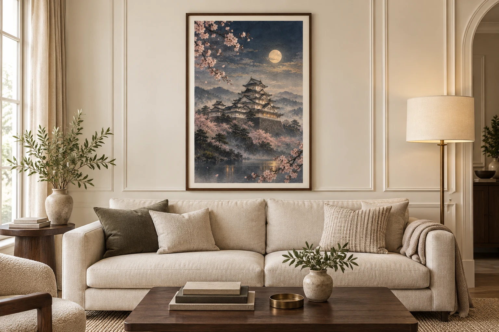

STEPS
まずは1商品、出品までの5ステップ
テーマを決めて、ChatGPTで画像を作り、Etsyに出品する。
この5ステップで、まずは1商品の出品を目指しましょう。
今回やることは、この5STEP
- STEP1 販売するテーマを決める
- STEP2 ChatGPTで販売用アートを作る
- STEP3 2:3サイズの販売データにする
- STEP4 商品タイトル・説明・タグを作る
- STEP5 Etsyへ出品する
そして最後に、🎁追加特典として「5種類の販売サイズへ展開する方法」もプレゼントします。
こんなこと、ありませんか？
AIで画像を作れるようにはなったけど…
- 作った画像をどう商品にすればいいかわからない
- どんなサイズで販売すればいいかわからない
- Etsyを見ても英語ばかりで難しそう
- 商品タイトルを英語で考えられない
- 商品説明を書くところで止まってしまう
- Etsyへの登録方法がわからない
- そもそも、何を作ったらいいかわからない
でも、ひとつずつ分けて考えると、やることは意外とシンプルです。
STEP 1
何を販売するか決めよう
最初にすることは、いきなり画像を作ることではありません。まず、「何を作るか」を決めます。
海外向けのデジタルウォールアートなら、日本らしさを感じるテーマがあります。
テーマ例
たとえば、こんなテーマがあります。
- 富士山／桜／京都／鳥居
- 花火／日本庭園／鯉
- 和モダン／Japandi／Japanese Vintage
ただし、自分が好きなものだけで決めるのではなく、Etsyでどんな商品が販売されているか確認してから作るという方法もおすすめです。
何を作ればいいか迷ったら：最後の🎁追加特典②に、Etsyで売れているテーマを調べるためのリサーチ用プロンプトも用意しています。
STEP 2
ChatGPTで販売用アートを作ろう
テーマが決まったら、ChatGPTで画像を作ります。今回は例として、「日本の夏の花火」をテーマにしてみます。
このプロンプトをコピーして使ってください
販売用和風画像作成プロンプト
プロンプトの内容を見る
海外向けのデジタルウォールアートとして販売する、
縦型アート作品を作ってください。
【テーマ】
日本らしさを感じる和風アート
【今回の題材】
日本の夏の花火
【用途】
Etsyで販売するデジタルダウンロード商品
【仕上がりの方向性】
上品
落ち着いている
大人っぽい
和モダン
海外の部屋にも飾りやすい
高級感がある
ごちゃごちゃしすぎない
【色の雰囲気】
落ち着いた色味
深い藍色
くすみカラー
淡い赤
金色
派手すぎる原色は避ける
【構図】
縦型
主役となるモチーフは中央寄りに配置する
上下左右に少し余白を残す
重要な被写体が端に寄りすぎない構図にする
【重要】
・文字、ロゴ、透かしは入れない
・人物や建物が不自然に崩れないようにする
・ポスターとして飾りたくなる完成度を意識する
・あとで2:3サイズの商品データにしやすい構図にする
・安っぽく見えない仕上がりにする
まずは1枚、販売向きの完成画像を作ってください。
テーマ部分だけ変えればOKです。たとえば、「日本の夏の花火」を「富士山と桜」に変えたり、「京都の夜景」に変えたり、「鳥居と日本庭園」に変えたりできます。
まずは、自分が「これを販売してみたい」と思える1枚を作ってみましょう。
実際にChatGPTで作った完成イメージ（テーマ違いの例）
STEP 3
販売用サイズにしよう
ここで、「販売するなら何サイズ作ればいいの？」と思いますよね。最初から、5種類も10種類も作る必要はありません。このガイドでは、まず1種類だけにします。
今回使うサイズ：2:3 / 7200 × 10800px
この比率なら、同じデータから、4×6 / 8×12 / 12×18 / 16×24 / 20×30 / 24×36インチなど、同じ2:3比率のサイズへ縮小して印刷できます。
つまり…20種類の画像を作る必要はありません。まずは、2:3の高解像度データを1枚作る。これでOKです。
| 項目 | 内容 |
|---|
| 比率 | 2:3 |
| 最終サイズ | 7200 × 10800px |
| ファイル形式 | JPG |
| 用途 | Etsyデジタルダウンロード商品 |
大切なのは無理やり引き伸ばさないこと：元画像の縦横比が違う場合、7200×10800pxへただ引き伸ばすだけではNGです。画像が歪んだり、被写体が不自然になる可能性があります。
そのため、ChatGPTに画像を見せて、2:3にするにはどう調整すればいいか確認してみましょう。
画像を2:3サイズに仕上げるプロンプト
プロンプトの内容を見る
この画像を、Etsyで販売する
デジタルウォールアート用のデータとして仕上げたいです。
以下の条件で整えるために、
必要な作業内容を初心者にもわかるように
順番で教えてください。
【販売データの条件】
・比率：2:3
・最終サイズ：7200 × 10800px
・形式：JPG
・用途：Etsyのデジタルダウンロード販売用
【対応印刷サイズ】
4×6
8×12
12×18
16×24
20×30
24×36インチ
【教えてほしいこと】
1. この画像が2:3比率に合っているか
2. 合っていない場合、どこをトリミングすると自然か
3. 引き伸ばしではなく自然な構図調整で仕上げる方法
4. 高画質化が必要かどうか
5. 最終的に7200×10800pxへ仕上げる流れ
6. Etsy登録に向いた保存形式
7. 保存前に確認すべきポイント
【重要】
・画像を縦横に不自然に引き伸ばさない
・元画像の雰囲気、色、主役の見え方をできるだけ保つ
・文字や新しい不要要素を追加しない
・初心者向けに、やることを順番で整理して説明する
保存する前にチェック
商品データが完成したら、次のポイントを確認します。
- 画像が歪んでいない？ 富士山や建物、人物などが、縦や横に伸びていないか確認。
- 画像が荒れていない？ 拡大したことで、ぼやけたり、細かい部分が崩れていないか確認。
- 余計な文字が入っていない？ AI画像では、意味のわからない文字のような模様が入ることがあります。細かい部分まで確認しておきます。
- ファイル容量を確認 Etsyのデジタルダウンロードは、1ファイルにつき20MBまでという上限があります（本ガイド作成時点）。7200×10800pxの高画質JPGだと20MBを超えることがあるため、圧縮して容量を下げられるか確認しましょう。上限は変更される場合があるため、出品前にEtsyの公式情報も確認してください。
STEP 4
タイトル・商品説明もChatGPTに作ってもらおう
画像が完成したら、次は、Etsyの商品ページを作ります。でも、海外向けの商品だから、「英語で商品説明を書くなんて無理…」と思いますよね。
ここも、ChatGPTに手伝ってもらいます。完成した商品画像をChatGPTへ送って、次のプロンプトを入力します。
Etsy商品ページ作成プロンプト
プロンプトの内容を見る
添付した画像を
Etsyで海外向けのデジタルウォールアートとして販売します。
この画像に合った
Etsy用の商品ページ文章を英語で作成してください。
【作成してほしいもの】
1. 商品タイトル
2. 商品説明文
3. 商品の魅力を短く伝える一言
4. デジタル商品であることの説明
5. 購入者向けの注意書き
6. AIを活用して制作したことの開示文
7. Etsy用タグ13個
8. 商品画像に入れる短い英語テキスト案
【条件】
・タイトルはわかりやすく自然な英語にする
・商品内容が伝わる言葉を使う
・同じ単語の不自然な繰り返しは避ける
・実物発送ではなくデジタルダウンロード商品であることを明記する
・画像から確認できない内容を勝手に追加しない
・大げさな売上保証や誤解を招く表現は使わない
・タグはEtsy向けに13個作る
【商品データ】
2:3比率
高解像度JPG 1枚
印刷可能サイズ例：
4×6
8×12
12×18
16×24
20×30
24×36インチ
最後に、
・日本語訳
・そのままコピペしやすい形
で出力してください。
英語をゼロから考えなくてOK：ChatGPTに作ってもらった文章を、そのまま使う前に、日本語訳を確認します。
そして、画像と説明が合っているかを確認してからEtsyへ登録します。
STEP 5
Etsyへ商品を登録しよう
ここまでできたら、いよいよEtsyへ出品します。今回販売するのは、デジタル商品です。実物のポスターを発送するのではなく、購入した人が画像データをダウンロードする商品として登録します。
5-1 Etsyのアカウントを作る
Etsyのトップページから「さっそく始めましょう」を選ぶと、ログイン・登録の画面が開きます。
- メールアドレスで新しく登録することもできます
- すでに使っているGoogleアカウントがあれば、「Googleでログイン」を選ぶと、新しいパスワードを覚える必要がなく簡単です
5-2 Etsyショップを開く（最初の1回だけ）
アカウントができたら、次に「ショップを開く」手続きをします。ショップの言語・国・通貨・ショップ名・入金方法・お支払い情報・セキュリティ設定、といった画面が順番に出てくるので、ひとつずつ答えていきます。
ショップ名に迷ったら：まずは仮の名前で進めてOKです。完璧を目指さなくて大丈夫です。
「法人アドレス」と出てきても大丈夫：手続きの途中で「法人（Business）」の住所を聞かれる場面がありますが、法人を持っている必要はありません。個人事業主や、まずは1商品からはじめる方でも、自分の自宅の住所を入力すれば大丈夫です。
「入金方法」で少し時間がかかります：海外からの売上を日本の銀行口座で受け取るために、Payoneer（ペイオニア）という決済サービスの登録が必要になります。
Payoneer側では、事業やご自身についての情報、受け取り用の銀行口座、本人確認書類（住所の証明・顔写真での本人確認など）の提出が必要で、確認にも少し時間がかかります。ここだけで20〜30分ほどかかることもあるので、時間に余裕があるときに進めるのがおすすめです。
一度登録してしまえば、次の商品からはこの手続きは不要です。
5-3 商品を出品する
ショップができたら、管理画面（Shop Manager）から「出品する」「＋商品を追加」といったボタンを押して、新しい商品ページを作ります。入力する主な項目はこちらです。
- 商品画像：まず、商品の完成画像を登録します。できれば、画像だけではなく、実際に部屋へ飾ったイメージも用意しましょう。たとえば、リビング／寝室／玄関／デスク周りなど。
- 商品タイトル：STEP4でChatGPTに作ってもらった英語タイトルを入力します。
- 商品説明：商品説明には、特に、DIGITAL DOWNLOADであることをわかりやすく書いておきます。実物の額やポスターが郵送される商品ではありません。
- AI使用についての説明：AIを使って制作した商品であることを、Etsyのルールに合わせて開示します。
- タグ：ChatGPTに作ってもらったタグを確認し、商品に合ったものを登録します。
- 商品データ：今回作った、2:3 / 7200 × 10800px のJPGデータを登録します。ファイル名もわかりやすく、たとえば Japanese_Fireworks_2x3_24x36.jpg のように、購入した人にも何のファイルかわかる名前にしておきます。
忘れずに：商品の種類を選ぶところで、「実物（Physical item）」ではなく「デジタル（Digital item）」を選びます。これを選ぶことで、購入者は郵送を待たずにその場でファイルをダウンロードできる仕組みになります。
出品には少額の手数料がかかります：Etsyでは、商品を1つ出品するごとに $0.20 USD の出品料がかかります（本ガイド作成時点）。売れなかった場合も、出品を続けていると更新のタイミングで再度かかります。商品が売れたときには、販売手数料も別途かかります。最新の金額はEtsy公式の手数料ページで確認してください。
5-4 内容を確認して公開する
入力した内容、画像、価格、ファイルに間違いがないか確認したら、「公開する」「出品する」といったボタンを押して商品を公開します。
画面のボタン名や手順は、2026年9月時点のEtsyの表示にもとづいています。実際の画面とは多少異なる場合があるため、進めながら最新のEtsy公式ヘルプもあわせて確認してください。
それでもつまずいたら：困ったところの画面をスクショして、ChatGPTに「この画面で、ここが分からない」と送ってみてください。状況を伝えると、次にすることを教えてくれます。

ここまでできれば1商品出品できます：テーマを決める → ChatGPTで画像を作る → 2:3の商品データにする → タイトル・商品説明を作る → Etsyへ登録する。これだけです。
最初から、完璧なショップを作る必要はありません。まず1商品出品してみる。ここから始めてみましょう。
🎁 追加特典① もっと販売サイズを増やしたい方へ
ここまでの方法では、初心者さんが迷わないように、2:3の1種類だけで出品しました。
でも、購入する人によって、飾りたいサイズは違います。たとえば、8×10／11×14／A4／18×24など、2:3以外の比率を使いたい人もいます。
そこで、もっと商品を充実させたい方は、5種類の販売サイズへ展開する方法もあります。
| 比率 | 最大データサイズ | 主な対応サイズ |
|---|
| 2:3 | 7200×10800px | 4×6 / 8×12 / 12×18 / 16×24 / 20×30 / 24×36 |
| 3:4 | 7200×9600px | 6×8 / 9×12 / 12×16 / 15×20 / 18×24 / 24×32 |
| 4:5 | 7200×9000px | 4×5 / 8×10 / 12×15 / 16×20 / 24×30 |
| 11:14 | 3300×4200px | 11×14 |
| A判 | 7016×9933px | A1 / A2 / A3 / A4 / A5 |
でも、5種類を自分で計算しなくてOKです。ここでも、ChatGPTに手伝ってもらいます。
5サイズ展開専用プロンプト
プロンプトの内容を見る
この画像を、Etsyで販売する
デジタルウォールアート用に、
5種類の印刷比率へ展開したいです。
元画像の雰囲気、色、主役の見え方、世界観をできるだけ保ちながら、
販売用として自然に展開する方法を教えてください。
【作成したい比率とサイズ】
1. 2:3 → 7200 × 10800px
2. 3:4 → 7200 × 9600px
3. 4:5 → 7200 × 9000px
4. 11:14 → 3300 × 4200px
5. ISO A1 → 7016 × 9933px
【このプロンプトでしてほしいこと】
1. 元画像の構図を確認する
2. 5種類それぞれについて
・そのまま使えるか
・トリミングが必要か
・背景の拡張が必要か
を判断する
3. 比率ごとにどのように構図調整すると自然か説明する
4. 画像を不自然に引き伸ばさずに展開する方法を教える
5. 高画質化が必要なら、その考え方も説明する
6. 各サイズの対応印刷サイズを整理する
7. Etsyへアップロードしやすいファイル名例を提案する
【対応印刷サイズ】
2:3
4×6 / 8×12 / 12×18 / 16×24 / 20×30 / 24×36
3:4
6×8 / 9×12 / 12×16 / 15×20 / 18×24 / 24×32
4:5
4×5 / 8×10 / 12×15 / 16×20 / 24×30
11:14
11×14
A判
A1 / A2 / A3 / A4 / A5
【重要】
・縦横に不自然に引き伸ばさない
・可能な限り主役の見え方を保つ
・画像の雰囲気や完成度を下げない
・初心者にもわかるように比率ごとに分けて説明する
最後に、
「この画像を5種類展開する場合の実行手順」
を1から順番にまとめてください。
まず1種類。慣れたら5種類。最初から全部やろうとすると、大変に感じてしまいます。だから、まずは2:3。1商品出品できたら、次に5サイズ展開。少しずつ増やしていきましょう。
さらに慣れてきたら、Etsy以外にRedbubbleのような他の販売サイトに挑戦してみるのもおすすめです。作った画像データはそのまま活用できます。
🎁 追加特典② 何を作ればいいかわからない方へ Etsy商品テーマリサーチ用プロンプト
「そもそも何を作ればいいの？」そんなときも、ChatGPTにリサーチを手伝ってもらえます。
売れ筋リサーチ用プロンプト
プロンプトの内容を見る
Etsyで販売する
海外向けデジタルウォールアートの市場調査をしたいです。
必ずWeb検索を使って、
実際のEtsy上の公開情報を確認しながら調査してください。
今回は、
「Japanese Wall Art」
「Japandi Wall Art」
「Japanese Printable Art」
を中心に調べてください。
【調べてほしいこと】
1. どんなテーマの商品が多いか
2. よく使われているタイトル表現
3. よく使われているタグ候補
4. 確認できる価格帯
5. 単品販売とセット販売の傾向
6. 競合が多そうなテーマ
7. 比較的ニッチそうなテーマ
8. これから出品するなら候補になりそうなテーマ10個
【重要】
・推測を事実として書かない
・確認できた情報と推測を分ける
・ショップ全体の販売数と個別商品の売れ行きを混同しない
・販売数が確認できない商品を「売れている」と断定しない
・調査した日付を明記する
・確認した情報源を示す
最後に、
「需要が確認できるテーマ」
「競合が多いテーマ」
「さらに調査する価値があるテーマ」
に分けて整理してください。
結び：AIで作るだけで終わらせない
AIを使えば、画像を作ることは以前よりずっと身近になりました。でも、画像を作っただけでは、まだ商品ではありません。
何を作るか考える
→ 販売できる形にする
→ 商品として説明する
→ 実際に出品する
そこまで進んで、初めて「販売への一歩」になります。
ご利用前にご確認ください
このガイドは、AIを活用してデジタル商品を作り、Etsyへの出品を始めるための手順を紹介するものです。売上や利益を保証するものではありません。
商品の販売状況は、テーマ、デザイン、価格、商品ページ、競合状況など、さまざまな要因によって変わります。
EtsyやAIサービスの仕様、料金、利用規約、販売ルールなどは変更される場合があります。実際に販売する際には、各サービスの公式情報を確認してください。
AIを使った作品を販売する場合は、使用したAIサービスの商用利用条件も確認してください。